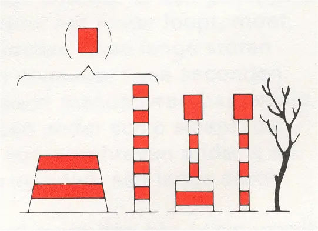
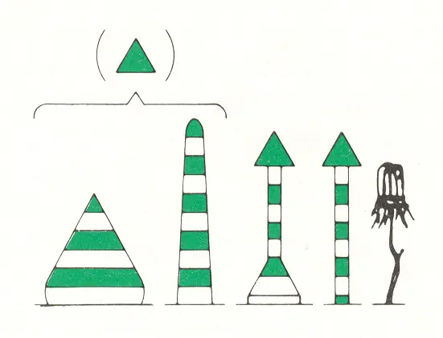

2.2 Aanvullende markering
Op brede vaarwaters kan naast de hoofdbetonning gebruik worden gemaakt van de hierna genoemde aanvullende markering. Deze geeft dan de begrenzing aan van eveneens bruikbaar vaarwater buiten de hoofdbetonning.
2.2.1 Rechterzijde
vorm: | stomp, in principe een ander betonningsvoorwerp dan gebruikt voor de hoofdbetonning |  |
kleur: | rood-wit horizontaal gestreept | |
topteken:1 | rode cilinder. |
1 indien aanwezig
2.2.2 Linkerzijde
vorm: | vorm: spits, in principe een ander betonningsvoorwerp dan gebruikt voor de hoofdbetonning |  |
kleur: | groen-wit horizontaal gestreept | |
topteken:1 | groene kegel met de top naar boven gericht. |
1 indien aanwezig
2.2.3 Splitsingen en kruisingen
Zie hiervoor onderdeel 2.1.3.